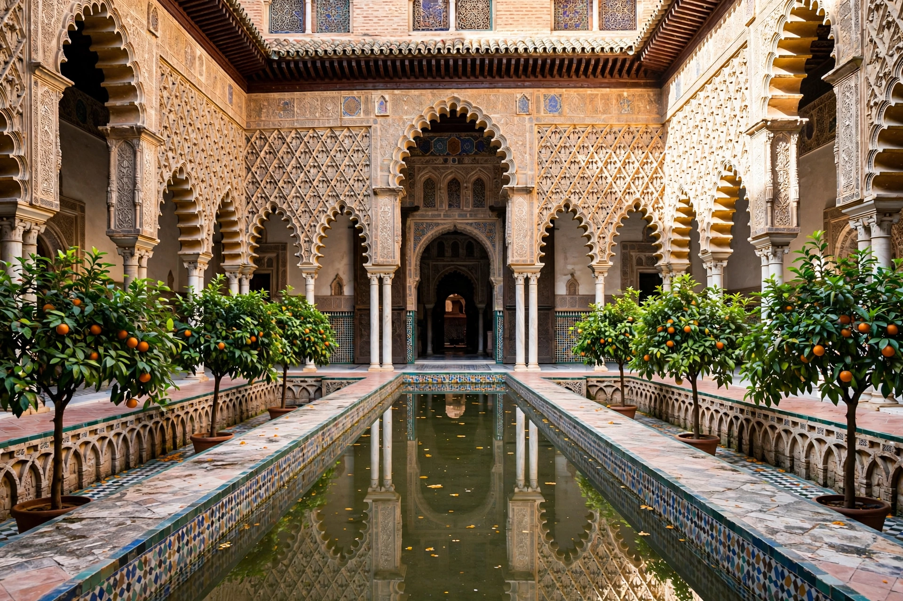

Alcázar of Seville
The Royal Alcázars of Seville (Spanish: Reales Alcázares de Sevilla), historically known as al-Qasr al-Muriq, is a royal palace complex in Seville, Spain. Originally an Islamic citadel built under the Almohads, it was extensively rebuilt in the 1360s by Peter of Castile in the Mudéjar style, largely by Muslim craftsmen. It is the oldest royal palace in Europe still in use: the Spanish royal family uses its upper apartments when in Seville. In 1987 it was declared a UNESCO World Heritage Site, together with the Cathedral and the Archivo de Indias.

| Alcázar of Seville | |
|---|---|
| Location | Seville, Andalusia, Spain |
| Built | 10th century onward; main palace 1364–1366 |
| Architectural style | Islamic, Mudéjar, Gothic, Renaissance |
| UNESCO | World Heritage Site (1987) |
History and description
The site was first fortified under the Umayyad emir Abd al-Rahman II in 844 after a Viking attack on Seville. The celebrated Mudéjar palace of Peter of Castile (Palacio de Don Pedro) includes the Courtyard of the Dolls, the Courtyard of the Maidens, and the Hall of Ambassadors, roofed by a gilded cedar dome of 1427. Later sections, including the Gothic Palace of Alfonso X and the gardens developed under Charles V, add Renaissance and Baroque layers. According to legend, the palace's gardens include the baths of María de Padilla, the mistress of Peter of Castile.
The Alcázar has served as a filming location for productions including Lawrence of Arabia (1962), Kingdom of Heaven (2005) and Game of Thrones, where it stood in for the Water Gardens of Dorne.
Categories: Palaces in Spain · World Heritage Sites in Spain · Mudéjar architecture